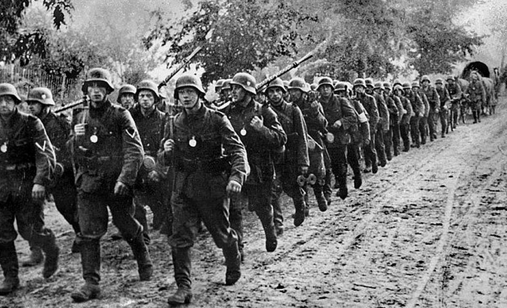
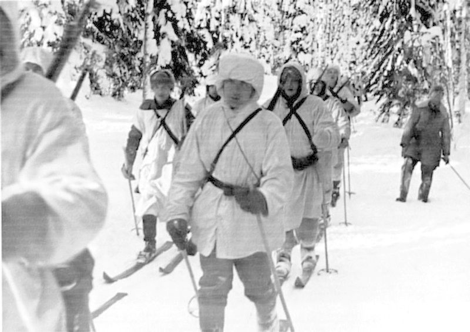
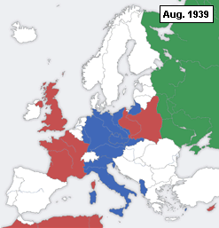

Evropa poznává Blitzkrieg
Invaze do Polska
Druhá světová válka začala 1. září 1939 německým a slovenským útokem proti Polsku. Již v předchozích dnech provedli Němci několik fingovaných provokací, jako bylo přepadení vysílačky v Gliwicích příslušníky Abwehru v polských uniformách, které měly ospravedlnit jejich invazi. Třebaže polská armáda nebyla početně o mnoho slabší než Wehrmacht, svojí úrovní výzbroje a výstroje nepředstavovala pro útočníka rovnocenného soupeře. Polská vláda spoléhala na podporu Francie a Velké Británie, které v souladu s dřívějšími zárukami vyhlásily po marném vypršení ultimáta 3. září Německu válku. Vlastní vojenský útok byl zahájen bombardováním města Wieluń. Německá Luftwaffe ihned poté zaútočila proti polským vojenským a komunikačním cílům. Sotva po čtyřech dnech bojů prolomila dvě velká německá vojenská uskupení, útočící z Pomořanska a ze Slezska, polskou obrannou linii. Rychle se pohybující německé pancéřové a motorizované divize vyrazily vstříc Varšavě a Brestu, v čemž jim těžkopádná polská pěchota nedokázala zabránit. Západní novináři použili k popisu tohoto nového způsobu vedení boje termínu Blitzkrieg („blesková válka“). 
Zimní válka
Poté, co po více než dvou měsících diplomatického nátlaku odmítlo Finsko sovětské požadavky na odstoupení území, bylo 30. listopadu napadeno Rudou armádou. Vzhledem k drtivé sovětské převaze očekával Stalin rychlé a snadné vítězství, avšak Sověti Finy hrubě podcenili. Díky obratné taktice dokázala finská armáda vedená maršálem Mannerheimem zadržovat Sověty až do března 1940. Rudá armáda, jejíž velení bylo zdecimováno stalinskými čistkami, přišla o 200 000 mužů, zatímco finské ztráty činily 25 000 mužů. Britové a Francouzi zvažovali vojenskou operaci na podporu Finska, ovšem dříve než mohla být uskutečněna, byla 13. března 1940 podepsána mírová smlouva, podle níž muselo Finsko odstoupit Sovětům část Karélie. Německé poznatky z tohoto konfliktu přivedly Hitlera k přesvědčení, že Rudá armáda nemůže být pro Wehrmacht vážnou překážkou. V důsledku tohoto sovětského útoku se Finové v roce 1941 zapojili do německého tažení proti SSSR, aby se v tzv. pokračovací válce pokusili dobýt zpět ztracená území. I když byli Finové spojenci Německa, zachránili si svoje židovské spoluobčany před holokaustem. O židovské otázce se finská vláda odmítla s Němci vůbec bavit. 
Obsazení Dánska a Norska
Velitel německého válečného námořnictva (Kriegsmarine) vyzýval od podzimu 1939 Hitlera k okupaci Norska, jehož přístavy představovaly optimální základny pro německé ponorky. V polovině prosince Hitler projevil souhlas, načež byl vypracován plán Unternehmen Weserübung, podle něhož mělo být Norsko obsazeno po souběžném vylodění německých pozemních sil v osmi největších přístavech. Plán zahrnoval také okupaci Dánska, které mělo poskytnout letecké základny. Svoji roli v Hitlerově rozhodnutí sehrála rovněž důležitost norského přístavu Narvik, jenž sloužil jako překladiště při dovozu švédské železné rudy do Německa. Této skutečnosti si byli dobře vědomi i Britové, kteří chystali vlastní výsadek v Narviku, odkud hodlali podpořit Finy v jejich boji proti Sovětům. Po skončení Zimní války bylo ale od tohoto záměru upuštěno. Němečtí vojáci stoupají do kopce v Norsku jižně od Bagn Začátkem dubna zahájili Britové zaminovávání norských výsostných vod, čímž však podnítili německý útok, k němuž došlo 9. dubna 1940. Dánsko se vzdalo po krátkém odporu během jediného dne, ale dánská vláda a ozbrojené síly si zachovaly relativní nezávislost (za cenu kolaborace s Německem) až do 28. srpna 1943, kdy v rámci operace Safari Němci převzali plnou kontrolu. Dánsko bylo jedinou okupovanou zemí, kde se většina židovské populace zachránila před nacistickým holokaustem. Většina z asi sedmi tisíc židů přešla před hlavním německým zátahem na dánské židy (1./2. října 1943) do neutrálního Švédska.[10] V Norsku narazili Němci na houževnatý odpor. Většina vylodění proběhla úspěšně s výjimkou Osla, které bylo dobyto teprve německými výsadkáři. V Narviku se Němcům podařilo obsadit město i přístav, záhy však byli obklíčeni takřka pětinásobnou přesilou Britů, Francouzů a Norů, podporovaných Královským námořnictvem (Royal Navy). V následné bitvě o Narvik byli Němci koncem května nuceni město vyklidit a ustoupit směrem k hranicím Švédska, ovšem vývoj situace ve Francii přiměl Spojence počátkem června ke stažení jejich oddílů z Norska. Němci zde později instalovali loutkovou vládu pod vedením norského zrádce Vidkuna Quislinga.
Útok na západní Evropu
Dva dny po vyhlášení války Německu podnikli Francouzi omezenou a spíše symbolickou ofenzívu do Sárska. Následovalo klidné období na západní frontě, označované jako Sitzkrieg („válka vsedě“, případně „podivná válka“), které kvůli nepříznivému podzimnímu počasí a neočekávaně vysokým německým ztrátám v Polsku pokračovalo až do jara následujícího roku. Důvody francouzské pasivity spočívaly v defenzivní mentalitě, v jejímž duchu se francouzská armáda spoléhala na silně opevněnou pohraniční Maginotovu linii. Ta však nebyla vybudována podél hranic s Belgií. Na počátku října pověřil Hitler Vrchní velení armády (Oberkommando des Heeres) vypracováním plánu pro tažení proti Francii, nazvaném Fall Gelb. Britští a francouzští zajatci v Veules-les-Roses Na jaře 1940 byl německý plán útoku proti Francii a státům Beneluxu hotov. Původní záměru měla být invaze na západ provedena podobně jako v první světové válce. Nicméně generál Erich von Manstein a jeho spolupracovníci přesvědčili Hitlera, aby jádro obrněných sil soustředil k rychlému postupu přes Ardenský les a řeku Mázu, přičemž následný průlom měl vést k rozštěpení spojeneckých armád ve dví. Ardeny představovaly kopcovitý, hustě zalesněný terén naprosto nevhodný pro operace tanků, avšak Manstein tvrdil, že nepřítel zde nebude očekávat masivní útok, čímž bude dosaženo momentu překvapení. Obě válčící strany disponovaly stejně početnými armádami. Spojenci měli převahu v tancích, naproti tomu německá Luftwaffe měla nad svými protivníky navrch ve vzduchu, což se spolu s pružnější organizací německých pancéřových sil ukázalo jako rozhodující faktor. Vlastní útok započal 10. května 1940, kdy Wehrmacht překročil hranice Belgie, Holandska a Lucemburska.[11] Němečtí výsadkáři obsadili důležitá letiště, mosty a strategicky významnou belgickou pevnost Eben-Emael. V reakci na německý vpád do Beneluxu postoupil britský expediční sbor a část francouzských armád do Belgie na linii řeky Dyle, kde hodlaly zastavit německý postup. Tím však šly na ruku Mansteinovu plánu, neboť v téže době se sedm z deseti německých pancéřových divizí valilo nikým nezpozorováno ardenskými průsmyky. Po třech dnech, kdy se setkaly jen se slabým odporem, dorazily německé tanky vedené generálem Guderianem u Sedanu k řece Máze, kterou 14. května po urputném boji zdolaly. V tentýž den podnikla Luftwaffe ničivý nálet na Rotterdam, načež Holandsko kapitulovalo. O tři dny později padl také Brusel. Po překročení Mázy se německé tankové divize ocitly v nížině severní Francie a 20. května dosáhly ústí řeky Sommy do kanálu La Manche, čímž byl završen Mansteinův „sek srpem“ (Sichelschnitt). Britové se pokusili zasáhnout bok německých divizí u Arrasu, avšak poté, co byli odraženi, se ocitli v obklíčení. Do 27. května vedl neustálý německý postup k sevření britských a francouzských jednotek u Dunkerque. Na záchranu obklíčených vojsk byla proto zahájena operace Dynamo, v níž se i přes nepřetržité německé nálety britským vojenským i civilním plavidlům podařilo do 4. června evakuovat z Dunkerque takřka 340 000 spojeneckých vojáků. Evakuován byl téměř celý expediční sbor a rovněž 110 000 příslušníků francouzské armády. K této záchraně Spojenců přispěl i Hitlerův rozkaz z 24. května, kterým ze zcela nepochopitelných důvodů zakázal svým tankům v pokračování postupu. Němečtí vojáci v Paříži po dobytí Francie Němci obnovili 5. června ofenzívou na řekách Sommě a Aisně útok do nitra Francie a již po čtyřech dnech překročili řeku Seinu. 10. června se zapojila do války po boku Německa i Mussoliniho Itálie. Útok Italů v Alpách skončil ale navzdory italské převaze pohromou. 14. června vstoupil triumfující Wehrmacht do Paříže, která byla ještě předtím prohlášena otevřeným městem.[12] V téže době byla prolomena Maginotova linie. Za těchto kritických okolností byl francouzským předsedou vlády jmenován Philippe Pétain, hrdina z první světové války. Ten zahájil okamžitě vyjednávání o příměří, které bylo uzavřeno 22. června v Compiègne v tomtéž železničním vagóně, v němž Němci podepsali příměří v roce 1918. 17. června Sovětský svaz poblahopřál Německu k brilantnímu vítězství.[13] Blitzkrieg na západě tak skončil po pouhých šesti týdnech. Podle podmínek příměří byla Francie rozdělena na dvě části. Sever a západ země, kde se nacházely důležité letecké základny pro válku s Brity a přístavy v Atlantském oceánu, byly okupovány Wehrmachtem. Jižní a východní část Francie setrvala pod kontrolou Pétainovy vlády, která se usadila ve městě Vichy. Pétain zde nastolil kolaborantský, loutkový vichistický režim zcela loajální vůči Německu. Mezitím se v Londýně do čela exilového hnutí Svobodných francouzských sil (Forces françaises libres) postavil služebně nejmladší generál Charles de Gaulle. Francouzská flota zakotvená u alžírského Oranu byla však 3. července napadena[14] britským námořnictvem, aby nepadla do rukou Němců.
Bitva o Británii
Po vítězství nad Francií ovládal Adolf Hitler v létě 1940 přímo nebo prostřednictvím spojenců téměř celou Evropu. Jeho jediným zbývajícím nepřítelem zůstávala osamocená Velká Británie, jejíž nový ministerský předseda Winston Churchill sliboval Britům ve svých burcujících projevech pouze „krev, pot a slzy“. Nicméně britská armáda se po katastrofě ve Francii nacházela v troskách. Jedinou překážkou, která bránila Hitlerovým armádám v podrobení Britských ostrovů a jež mohla zmařit chystanou invazi (operace Seelöwe), bylo nyní britské letectvo (Royal Air Force) v čele s leteckým maršálem Hughem Dowdingem. Zlomit sílu RAF se v nadcházející bitvě pokusila německá Luftwaffe, jejímž velitelem byl Hermann Göring. Němci rovněž doufali, že Británii izolují a vyhladoví s pomocí svých ponorek, operujících z Francie a Norska. Supermarine Spitfire – stíhačka Královského letectva (RAF) Samotná letecká bitva začala krátce po dobytí Francie. V první fázi se Luftwaffe zaměřila na britské konvoje, které během tzv. bitvy o kanál (Kanalkampf) vytlačila z Lamanšského průlivu. Hlavní útok byl zahájen 13. srpna, v tzv. „den orla“ (Adlertag). Němci nejprve částečně neutralizovali britský radarový systém a zaútočili proti přístavům a vojenským a leteckým zařízením na pobřeží. V průběhu této fáze boje utrpěly obě strany nejvyšší ztráty za celou bitvu. Později se Luftwaffe zaměřila proti letištím RAF ve vnitrozemí a leteckým továrnám. V závěrečné etapě boje, na počátku září, podnikli Němci denní útoky na Londýn a jiná velká britská města, jako bylo třeba Coventry, s cílem zlomit morálku jejich obyvatel. Konečně 15. září Britové přesvědčivě odrazili rozsáhlý německý útok, načež Hitler nařídil odložit vylodění na neurčito. Luftwaffe i nadále pokračovala v bombardování měst (Blitz). Kvůli velkému množství zničených letadel se však od října omezovala pouze na noční útoky, které si i přesto do jara následujícího roku vyžádaly přes 40 000 životů. V bitvě o Británii usilovali Němci o zničení nepřátelských stíhaček, avšak podcenili význam radaru pro obranu Britů. Navíc britský průmysl dokázal vždy plně nahrazovat ztráty vlastních strojů. Značný podíl na tomto vítězství „nemnohých“ náležel kromě britských pilotů také Polákům, Kanaďanům, Novozélanďanům, Čechoslovákům, Belgičanům a zástupcům mnoha jiných národů.
Balkánské tažení
Již od třicátých let směřoval Benito Mussolini své velmocenské ambice na Balkánský poloostrov. V dubnu 1939 okupovala italská vojska Albánii, z níž 28. října 1940 zahájila překvapivý útok proti Řecku. Ovšem ofenzíva špatně vybavených a nedostatečně motivovaných italských vojáků selhala sotva po několika dnech. Řekové přiměli italské agresory k přechodu do defenzívy a vzápětí je zatlačili zpět do Albánie. Vzhledem k nebezpečí porážky svého spojence a z obav z britského zásahu, jenž by mohl ohrozit německou kontrolu rumunských ropných polí, vydal v prosinci Hitler pokyn k vypracování plánů tažení na Balkán (operace Marita). Zároveň byla zahájena diplomatická ofenzíva, v jejímž rámci se na stranu mocností Osy přidaly Rumunsko, Maďarsko a Bulharsko. Na konci března 1941 se k Ose připojila i Jugoslávie, avšak protiněmecké demonstrace a puč jugoslávských leteckých důstojníků měl za následek vystoupení Jugoslávie z aliance. Němečtí výsadkáři nad Krétou 6. dubna 1941 překročily německé divize z Rakouska, Rumunska a Bulharska hranice s Jugoslávií, souběžně Luftwaffe podnikla ničivý nálet na Bělehrad. Jugoslávská obrana byla brzy prolomena a už 10. dubna 1941 stanuly jednotky Wehrmachtu v chorvatském Záhřebu, kde byly uvítány jásajícími davy. Bělehrad dobyly německé pancéřové divize dva dny nato a 17. dubna přijalo jugoslávské velení svou bezpodmínečnou kapitulaci. Poražená Jugoslávie byla rozdělena mezi vítězné státy a na jejích troskách byl vyhlášen tzv. Nezávislý stát Chorvatsko pod vedením Ustašovců. Řekové posílení britskými jednotkami, přesunutými ze severní Afriky, kladli Němcům houževnatější odpor. Německý postup do vnitrozemí ztěžoval také nepříznivý hornatý terén. Po překonání Metaxasovy linie padlo 9. dubna 1941 do rukou Němců město Soluň, takže téměř polovina řecké armády byla uvězněna ve východní Makedonii. Během dvou týdnů byli Řekové obklíčeni rovněž v Epiru. Britové se pokusili zadržet Němce u Thermopyl, avšak poté, co byla jejich obrana zdolána, zahájili obojživelnou evakuační operaci. 27. dubna 1941 vstoupily oddíly Wehrmachtu do Athén a na Peloponés, čímž bylo balkánské tažení ukončeno. O necelý měsíc později, 20. května 1941, provedly německé vzdušné síly leteckou invazi na Krétu. Při tomto útoku však němečtí výsadkáři utrpěli těžké ztráty a také zprvu nedokázali dobýt žádné letiště potřebné k zajištění příchodu posil a k plynulému zásobování. Kvůli špatné koordinaci a komunikaci mezi jednotkami britského Commonwealthu a intenzivním útokům Luftwaffe se však Němcům nakonec podařilo konsolidovat svoje pozice a vytlačit Spojence z ostrova. Hitler nicméně do budoucna zakázal provádění jakýchkoli dalších výsadkových operací.
Útok na Sovětský svaz
Boj proti bolševismu náležel společně se získáním „životního prostoru“ na východě mezi hlavní motivy Hitlerovy politické kariéry. Vlastní tažení proti Sovětskému svazu, jež mělo být podle nacistické rasové ideologie vedeno jako vyhlazovací válka, bylo připravováno již od vítězství nad Francií v létě 1940. Operace Barbarossa, jak byl výsledný plán pojmenován, předpokládala rozdělení německých vojenských sil do třech skupin armád. Na severu měly být obsazeny pobaltské státy a Leningrad. Skupina armád Střed, na níž spočívala hlavní tíže tažení, měla postoupit přes Bělorusko a dobýt Moskvu. Jižní uskupení německých vojsk spolu s Rumuny, Italy a Maďary mělo okupovat Ukrajinu. Za operační cíl, jehož mělo být dosaženo, byla stanovena linie spojující města Archangelsk a Astrachaň. Sovětský svaz byl napaden 22. června 1941, kdy 3 miliony německých vojáků s 3600 tanky překročily sovětské hranice.[16] Ačkoli přesuny německých armád byly dobře patrné celé měsíce před začátkem tažení, Stalin, jehož důvěra v sovětské vojenské kapacity byla otřesena zimní válkou, odmítal vykonat jakákoli protiopatření, jež by mohla vyprovokovat Němce. Rudá armáda byla tudíž útokem naprosto zaskočena, třebaže měla nad Němci převahu v tancích i v letadlech. Obzvláště sovětské letectvo bylo značně poničeno německými nálety první den útoku. Německé pancéřové kleště, následované pěchotou, už v prvním týdnu obklíčily a zničily ohromné seskupení sovětských vojsk v prostoru Białystok-Minsk. Přitom urazily více než 600 kilometrů. Na počátku července překročila skupina armád Střed Dněpr a přiblížila se ke Smolensku, kde se poté odehrála rozhořčená obkličovací bitva, jež byla skončena v srpnu. V obou těchto střetnutích padly do zajetí stovky tisíc sovětských vojáků. Mezitím skupina armád Jih obsadila západní Ukrajinu, zatímco Rumuni obklíčili Oděsu. Postup v tomto sektoru fronty se však rozvíjel pomaleji. Na severu Němci rychle překonali řeku Dvinu a po obsazení Litvy, Lotyšska a Estonska směřovali k Leningradu. Stejně jako v Polsku postupovaly za jednotkami Wehrmachtu Einsatzgruppen SS, které nemilosrdně likvidovaly veškeré židovské obyvatelstvo a politické komisaře Rudé armády. Na těchto zvěrstvech se leckdy podílel i Wehrmacht. S obdobnou krutostí a brutalitou bylo nakládáno rovněž se zajatými rudoarmějci všech hodností, s partyzány a také s civilisty. Sovětská obrana s minometem u Moskvy Po dobytí Smolenska se němečtí generálové zasazovali za okamžitý útok na Moskvu, která byla pro jejich vojska nyní vzdálená jen 400 kilometrů. Nicméně Hitler považoval za důležité ovládnout ukrajinské zemědělské a průmyslové zdroje, ačkoli krátce po začátku tažení nařídilo sovětské vrchní velení (Stavka) evakuaci sovětského průmyslu na východ, především demontování veškerého těžkého průmyslu a jeho evakuaci ze západních regionů do oblastí za Ural. Hitler proto skupině armád Střed nařídil zastavit postup na sovětské hlavní město a obrátit se na jih. 8. září 1941 Němci spolu s Finy oblehli Leningrad a toto město postupně téměř zcela odřízli od veškerého nutného zásobování. Obležení Leningradu trvalo více než dva roky a vyžádalo si životy až jednoho milionu civilistů.[17] Do konce září bylo pak v gigantické obkličovací bitvě u Kyjeva zajato dalších 650 000 sovětských vojáků.[18] Po šestitýdenní pauze obnovila skupina armád Střed 2. října svůj útok na Moskvu (tzv. operace Tajfun). Německý postup však záhy zpomalily podzimní deště, jež proměnily ruské cesty v bláto. O měsíc později udeřily první mrazy. V listopadu pronikli Němci do Rostova na Donu a na Krym. 15. listopadu zahájili svoji finální ofenzívu proti Moskvě, jež měla být provedena obrovitým obchvatem města. Na konci měsíce stály předsunuté jednotky Wehrmachtu sotva 30 kilometrů od Kremlu, vyčerpaní němečtí vojáci se ale ocitli na pokraji svých sil. Do 5. prosince 1941 byl celý německý postup zastaven. Následujícího dne zahájily čerstvé sibiřské divize maršála Žukova, které byly vybaveny moderními tanky T-34, sovětský protiútok, který do začátku ledna 1942 zatlačil příliš roztažené německé linie o 200 kilometrů zpět. Německá blesková válka v Sovětském svazu již tehdy prakticky ztroskotala.
Role se mění
Bitva o Atlantik
Německé ponorkové loďstvo mělo obdobně jako v první světové válce vyhladovět a izolovat Britské ostrovy ničením obchodních lodí. Za vlastní počátek bitvy o Atlantik lze považovat 14. říjen 1939, kdy jedna německá ponorka vnikla do zálivu Scapa Flow, hlavního opěrného bodu britské domácí floty (Home Fleet), přičemž potopila jednu ze zde zakotvených bitevních lodí. Přes tento úspěch se však do poloviny roku 1940 německé útoky v Atlantském oceánu omezovaly pouze na ojedinělé akce osamocených ponorek. Teprve po dobytí Francie, jež umožnilo zřízení ponorkových základen v přístavech v Brestu, Lorientu, Saint-Nazaire a La Rochelle, zajišťujících rychlejší dosažení operačních prostorů, došlo k zefektivnění německých ponorkových operací. Německé ponorky plně rozvinuly taktiku vlčích smeček, proti nimž byly spojenecké konvoje, slabě chráněné doprovodnými torpédoborci, bezmocné. V roce 1940 přišli Spojenci o 4,5 milionů tun lodního prostoru a v roce 1941 o zhruba stejné množství. Vítězství německých ponorek obratně využívala nacistická propaganda, jež mnohé z úspěšných kapitánů stylizovala do role národních hrdinů. K podpoře vedení ponorkové války vyplula v květnu 1941 z Baltského moře do Atlantiku německá eskadra. Ta sestávala z právě do služby uvedené bitevní lodě Bismarck, těžkého křižníku Prinz Eugen a několika torpédoborců. V průběhu plavby v Dánském průlivu mezi Grónskem a Islandem poslal Bismarck ke dnu britský bitevní křižník HMS Hood. Přesto dříve, než doplul do Francie, byl dostižen a zničen britským loďstvem. Po vstupu Spojených států do války se těžiště německých akcí přesunulo blíže k americkému pobřeží. Zpočátku špatně organizovaná americká pobřežní obrana nedokázala zamezit útokům na obchodní lodě. Operační pásmo ponorek se později v důsledku intenzivnější obrany rozšířilo až do Karibiku a jižního Atlantiku. Původní počet asi 50 ponorek na počátku války vzrostl ve druhé polovině roku 1942 na více než 300. Tento rok byl proto nejúspěšnějším rokem německých ponorek, které zničily přes 8 milionů tun lodního prostoru, čímž se nejvíce přiblížily kritické hranici ohrožující britské hospodářství. V červnu 1942 také proběhla neúspěšná Operace Pastorius, kdy došlo k prvnímu pokusu o vylodění německých sabotérů na území USA, kteří měli za úkol poškodit válečný průmysl USA a vyvolat bombovými útoky paniku mezi civilním obyvatelstvem. Koncem roku 1942 však Spojenci prolomili německé šifrovací zařízení Enigma, používané ponorkami. Díky tomu a zvýšené spojenecké produkci modernějších letadel a torpédoborců bylo v květnu 1943 potopeno 43 německých ponorek, což si vynutilo dočasné přerušení ponorkových operací. Na tomto zvratu, jenž se projevil poklesem potopené tonáže na 3,5 milionů, nic nezměnilo ani využití šnorchlu, získaného porážkou Holandska. Po osvobození Francie v létě 1944 musely být opuštěny ponorkové základny na pobřeží Atlantiku. Ponorky byly pak zatlačeny zpět do Severního a Baltského moře. Po německé kapitulaci v květnu 1945 byly ponorky buď poslány ke dnu, nebo se jejich posádky vzdaly ve spojeneckých přístavech.
Bitva u Stalingradu
Poté, co byly sovětské průlomy na východní frontě eliminovány, převzal Wehrmacht na jaře 1942 opět iniciativu. Nová Hitlerova ofenzíva (Fall Blau) si kladla za cíl dobytí jižního Ruska a po dosažení Volhy proniknutí za Kavkaz, kde mělo být obsazeno Baku a místní ropná pole. Jakmile půda po jarním tání dostatečně ztvrdla, byl v květnu zahájen útok proti Sovětům na Krymu, jenž byl završen dobytím obleženého Sevastopolu na začátku července. 28. června vyrazili Němci východně od Charkova směrem na Voroněž a za méně než čtyři týdny stanuli na březích Donu. Navzdory rychlosti útoku byly počty zajatých sovětských vojáků nesrovnatelně nižší než v předchozím roce. Stalin a jeho generálové věřili, že Němci chystají druhý, mnohem mocnější úder na Moskvu a shromáždili zde veškeré dostupné zálohy, zatímco na jihu se Rudá armáda měla vyvarovat obklíčení. Koncem července se Hitler vlivem relativní snadnosti německého postupu rozhodl pozměnit původní plán a nařídil polovině armád blížících se ke Stalingradu zamířit na Kavkaz. 23. července byl znovu dobyt Rostov a na začátku srpna se německé tanky přehnaly přes Kubáň, načež dorazily k severnímu Kavkazu, kde byly spatřeny první vrtné věže. 21. srpna vztyčili bavorští horští myslivci vlajku se svastikou na hoře Elbrus. Kvůli velkým vzdálenostem a nedostačující železniční síti se však vážně zhoršilo zásobování vojenských operací, což zpomalilo další útoky. Německý postup ve Stalingradu Souběžně s ofenzívou na Kavkaze pokračoval rovněž postup německé 6. armády vstříc Stalingradu. Vlastní bitva u Stalingradu začala 23. srpna potom, co asi 1000 letadel Luftwaffe zasypalo Stalingrad zápalnými bombami, které proměnily většinu města v hromadu sutin. Krátce nato dosáhly německé jednotky Volhy severně od města. V samotném Stalingradu Stavka zorganizovala improvizovanou obranu, s níž se Němci střetli v rozhořčeném boji o každý dům a ulici. Zapletli se tak do náročné a vyčerpávající bitvy v rozvalinách města, v níž utrpěli vysoké ztráty. Během německé ofenzívy, pokračující až do poloviny října, přišla 6. armáda o polovinu svých bojových stavů, zatímco sovětské 62. armádě neustále proudily přes Volhu čerstvé posily. Rudá armáda obkličuje německá vojska bojující ve Stalingradu u Kalače Kvůli přílišnému roztažení fronty byla německá křídla tvořena méně kvalitními rumunskými, maďarskými a italskými divizemi. Této slabosti využili Sověti, když v rámci operace Uran provedli 19. listopadu dva mohutné údery severozápadně a jihovýchodně od města. O čtyři dny později se útočící sovětské fronty setkaly západně od Stalingradu, čímž byla 6. armáda uvržena do obklíčení. Ujištěn Göringovým tvrzením, že Luftwaffe dokáže zásobit obleženou 6. armádu letecky, rozkázal Hitler jejímu veliteli, generálu Paulusovi, vytrvat na místě. 12. prosince byl zahájen pokus o vyproštění. Nicméně trvající sovětský nápor a Hitlerův kategorický nesouhlas s vyklizením Stalingradu měly za následek, že němečtí vojáci ve městě se ocitli v pasti. V polovině prosince byla spuštěna operace Saturn, při níž Rudá armáda vytlačila Němce z Kavkazu. Zatím ve Stalingradu Paulus odmítl sovětskou výzvu ke kapitulaci, pročež Sověti obnovili útok na město, než konečně 31. ledna Paulus a většina vyhladovělých vojáků 6. armády v beznadějné situaci kapitulovala. Zbytky německých sil ve Stalingradu se vzdaly 2. února 1943, ačkoli omezené střety především v městských stokách pokračovaly ještě v dalších měsících. Z téměř 300 000 příslušníků 6. armády padlo do sovětského zajetí 90 000 mužů, z nichž se po válce vrátilo do Německa pouze 6000. Sovětské vítězství u Stalingradu definitivně zlomilo mýtus o neporazitelnosti Wehrmachtu a stalo se symbolem obratu ve vývoji války.
Invaze do Itálie
V lednu 1943 se konala Casablanská konference, na níž Churchill přesvědčil Roosevelta k upřednostnění invaze na Sicílii a do Itálie před přímým útokem na západní Evropu. Realizace tohoto záměru započala 9. července 1943, kdy se kombinované britsko-kanadsko-americké síly zachytily na Sicílii. Navzdory houževnatému odporu německých divizí nebyla vojska Osy schopná zabránit Spojencům v dobytí ostrova. Přesto ještě před pádem Sicílie v polovině srpna stihla Osa evakuovat většinu svých jednotek na pevninu. Mezitím, co probíhaly boje na Sicílii, byl Mussolini v Itálii zbaven moci a uvězněn. Na začátku září byl však osvobozen německým komandem a na Němci okupovaném území později vyhlásil loutkovou Italskou socialistickou republiku. Italská vláda zahájila vyjednávání se Spojenci, které vyústilo v podepsání kapitulace 3. září 1943.[22] V tentýž den překročili Britové Messinský průliv. 9. září, den po zveřejnění italské kapitulace, se Američané vylodili u Salerna nedaleko Neapole. Zde ale museli čelit prudkému německému protiútoku. Ovšem ještě před začátkem zimy se Němci stáhli na Gustavovu linii na jih od Říma, kde hodlali využít přirozeného defenzivního terénu Apeninského poloostrova k co největšímu zpomalení spojeneckého postupu na sever. Američané se v lednu 1944 neúspěšně pokusili prolomit německou obranu vyloděním u Anzia v týlu Gustavovy linie. V téže době začala namáhavá a zdlouhavá bitva o Monte Cassino. Spojenci podnikli celkem čtyři útoky, avšak teprve v květnu se Polákům podařilo v tomto boji dobýt vítězství. 4. června vstoupili spojenečtí vojáci do Říma.[23] Němci zatím v pořádku ustoupili na Gótskou linii, protínající italský poloostrov mezi Pisou a Rimini. Churchill věřil, že rychlý postup přes severní Itálii by Spojencům umožnil proniknout k Vídni. Nicméně do začátku zimy 1944 spojenecké armády nedokázaly zdolat německý odpor.
Bitva v Kurském oblouku
¨V průběhu operace Saturn přišel Wehrmacht do poloviny února 1943 o kontrolu nad Rostovem a Charkovem. Při následném německém protiútoku, jemuž čelili v bitvě u Sokolova i vojáci 1. československého praporu, však Němci opět obsadili Charkov, čímž vznikla výduť u města Kursk. Ještě než jarní deště přerušily v březnu 1943 boje na východní frontě, vrhl se Hitler do plánování nové letní ofenzívy, jejímž cílem mělo být obklíčení a zničení sovětských vojsk ve výběžku u města Kursk. Ve srovnání s dřívějšími letními kampaněmi se jednalo o mnohem skromnější operační cíl. Stavka byla prostřednictvím sovětské rozvědky dostatečně informována o německých úmyslech a nechala proto kurský oblouk značně opevnit vytvořením hustých minových polích a protitankových pastí, rozmístěním velkého počtu protitankových děl a zřízením do hloubky vedených linií zákopů. Bitva u Kurska začala 5. července 1943 německým úderem severně a jižně od města, přičemž jádro německých sil představovaly pancéřové divize tvořené také novými typy tanků včetně Tigrů. Toto střetnutí se stalo největší tankovou bitvou celé války. Navzdory ohromné koncentraci tankových sil se německým pancéřovým kleštím nepodařilo spojit, načež Hitler po několika dnech nařídil zastavení ofenzívy. V tomto marném boji byly promrhány německé tankové zálohy, takže iniciativa na východní frontě přešla definitivně na stranu Rudé armády.
Konec války
Vylodění v Normandii
Na konci listopadu 1943 se Roosevelt, Churchill a Stalin setkali na konferenci v Teheránu, aby zde projednali společný postup, přičemž bylo dohodnuto, že spojenecká invaze do Francie bude uskutečněna v nadcházejícím roce. Hitler hodlal tomuto nebezpečí předejít budováním silně opevněného systému pobřežních pevností zvaných Atlantický val. Operace Overlord, jak zněl krycí název vylodění v Normandii, začala 6. června 1944 (den D), kdy zhruba 6500 spojeneckých plavidel vysadilo na plážích Normandie dvě americké, dvě britské a jednu kanadskou divizi.[27] Ty byly podporovány třemi výsadkovými divizemi, zajišťujícími v německém týlu křídla vyloďujících se jednotek, a téměř 12 000 letadly. Navzdory houževnaté obraně se Němcům nepodařilo zatlačit útočníky do moře a Spojenci, jejichž vrchním velitelem byl generál Eisenhower, dokázali postupně rozšířit svoje předmostí. Do konce června dopravili Spojenci do Normandie kolem 850 000 vojáků a vyčistili poloostrov Cotentin s přístavem Cherbourg. Zároveň podnikali útoky na Caen, které bylo po tuhých bojích dobyto Brity a Kanaďany v průběhu července. Koncem téhož měsíce zahájili Američané operaci Cobra, jež vedla k prolomení německé linie na počátku srpna. Hitler se pokusil provést protiútok, jímž by odřízl divize generála Pattona pronikající do Bretaně a k Loiře. Jeho tanky však byly snadno odraženy. Kolem německých pancéřových sil na západě se navíc začala u Falaise nebezpečně stahovat smyčka hrozící jejich obklíčením. Westheer jen stěží vyvázl z této pohromy a v značně pošramoceném stavu se stáhl za Seinu. Vítězní Spojenci poté za úzké součinnosti s francouzským hnutím odporu osvobodili 25. srpna Paříž. Už o deset dnů dříve uskutečnili Američané a svobodní Francouzi operaci Dragoon, když se vylodili v jižní Francii, odkud rychle postoupili údolím řeky Rhôny na sever. Do poloviny září se setkali u Dijonu se spojeneckými jednotkami razícími si cestu z Normandie. Skupina německých generálů, vědoma si bezvýchodnosti německého postavení, provedla 20. července atentát na Hitlera. Akce skončila neúspěchem, načež byli spiklenci popraveni. Po překročení Seiny pronikli Spojenci do Belgie a k německým hranicím. Britové vstoupili v prvním zářijovém týdnu do Bruselu a osvobodili také Antverpy. Ústí Šeldy, bez něhož byl zdejší přístav bezcenný, setrvalo v rukou Němců až do listopadu. Řadu jiných přístavů na pobřeží Lamanšského průlivu a Atlantiku držely v souladu s Hitlerovými rozkazy německé posádky, které tím výrazně narušily již tak komplikované zásobování Spojenců. Mezi tyto přístavy patřil i Dunkerque, na jehož obléhání se výrazně podílela i Československá samostatná obrněná brigáda. Němci mezitím konsolidovali svoje pozice na Západním valu, pročež Montgomery získal podporu pro operaci Market Garden, v rámci níž měli Spojenci rychle překonat Rýn a vpadnout do Německa. 17. září byli britští a američtí parašutisté vysazeni u mostů přes Rýn v Nizozemsku. Souběžně vyrazily z Belgie britské tanky, jež měly výsadkáře vyprostit. Posledního z těchto mostů, jenž se nacházel v Arnhemu, se ale Spojenci zmocnit nedokázali. Úspěšnou obranou Nizozemska si Němci zajistili čas k rekonstrukci svých poničených divizí, neboť kvůli přetrvávajícím zásobovacím obtížím Spojenců se situace na západní frontě na podzim 1944 stabilizovala.
Osvobození Balkánu a Východní Evropy
22. června 1944, v den třetího výročí napadení SSSR, zahájily Žukovovy a Vasilevského fronty operaci Bagration, jež směřovala proti skupině armád Střed v Bělorusku.[28] Němečtí generálové, kteří soustředili hlavní síly na Ukrajině, nepočítali s útokem Rudé armády ve vesměs bažinatém terénu Běloruska. V nastalé bitvě si Sověti vytvořili místní trojnásobnou převahu v pěchotě a disponovali rovněž absolutní převahou ve vzduchu. Ačkoli Hitler zakázal ústup, německá linie se začala záhy po zahájení útoku hroutit. 3. července se útočící sovětské tanky setkaly v Minsku, čímž obklíčily a zničily jádro skupiny armád Střed. Hitler nechal přemístit do Běloruska posily z Ukrajiny, což bylo strategickým záměrem sovětského velení, které zahájilo na Ukrajině 13. července Lvovsko-sandoměřskou operaci. Na východní frontě čelil nyní Wehrmacht průlomu katastrofálních rozměrů.[29] Do konce července dobyli Sověti Lvov, východní Polsko a Vilno na severu, čímž ohrozili německé pozice v Pobaltí a přiblížili se k Východnímu Prusku. Sovětské údery uvrhly Ostheer na pokraj kolapsu a teprve na počátku srpna se Rudá armáda zastavila na Visle v bezprostřední blízkosti Varšavy. V reakci na to vypuklo 1. srpna varšavské povstání vedené Zemskou armádou, jež však nacisté po dvou měsících bojů brutálně potlačili, přičemž zemřelo 200 000 Poláků. Vstup sovětské armády do Bukurešti v srpnu 1944. Foceno poblíž bulváru Karla I. Na fotografii je britský Universal Carrier, pronajmutý v rámci smlouvy "Lend-Lease" Sovětům. Ve druhé polovině srpna spustila Rudá armáda jasko-kišiněvskou operaci proti Rumunsku. Nato v Bukurešti došlo ke svržení proněmeckého diktátora Antonesca. Poté, co Rudá armáda vstoupila do rumunského hlavního města uzavřeli Rumuni se Sověty příměří a vyhlásili válku Německu. V téže době se rozhořelo národní povstání na Slovensku, Sověti společně s československými jednotkami proto v září zahájili karpatsko-dukelskou operaci. Nicméně dříve než mohlo být s povstalci navázáno spojení, Němci v říjnu slovenskou vzpouru rozdrtili. V září během baltické operace zlomili Sověti v Pobaltí odpor Němců a jejich místních spojenců. Zbytky několika německých divizí byly sevřeny v kuronské kapse, kde pokračovaly v boji až do května následujícího roku. V důsledku toho kapitulovalo 19. září Finsko. Již o několik dní dříve pronikla Rudá armáda do Bulharska, jež poté změnilo strany stejně jako dříve Rumunsko. 20. října osvobodili Sověti a jugoslávští partyzáni Bělehrad, což vedlo k německému vyklizení Řecka. Krátce předtím se maďarský regent Miklós Horthy pokusil sjednat příměří se Sověty, avšak byl svržen maďarskými fašisty podporovanými Němci, kteří okupovali Maďarsko v březnu. Ovšem i přes úpornou obranu německých a maďarských jednotek se Rudé armádě podařilo do konce prosince 1944 dokončit obklíčení Budapešti.
Bitva v Ardenách a přechod přes rýn
Podzimního zklidnění na západní frontě využil Hitler ke shromáždění nových tankových záloh. S nimi hodlal udeřit proti americkým divizím v Ardenách, čímž by si otevřel cestu do belgických nížin a k Antverpám. Dobytím tohoto přístavu by pak vrazil klín mezi americké a britské armády. Bitva v Ardenách, poslední Hitlerův pokus o zvrat vývoje války na západě, začala 16. prosince 1944, kdy tři německé armády zcela zaskočily své protivníky. Špatné klimatické podmínky zpočátku znemožnily Spojencům uplatnit jejich vzdušnou převahu. Po několika počátečních německých úspěších však energická protiopatření Spojenců a nedostatek pohonných hmot přinutily Němce k zastavení ofenzívy dříve, než stihli překonat řeku Mázu. Jakmile nastalo zlepšení počasí, obnovilo spojenecké letectvo útoky na německé pancéřové divize, které tudíž přešly do obrany. Vzniklý výběžek Spojenci eliminovali do poloviny ledna 1945, když zatlačili Wehrmacht do jeho původních pozic. Přesto ještě 1. ledna podnikli Němci menší ofenzívu v Alsasku. V průběhu února Spojenci vyčistili Porýní, načež 24. března překročili na široké frontě samotný Rýn a pronikli do nitra Německa. V dubnu se rozhořela bitva v Porúří, kde bylo obklíčeno a zajato přes 300 000 německých vojáků. Mezitím Britové překonali 5. dubna řeku Veseru a o šest dnů později dosáhli Američané Labe u Magdeburgu. Berlín se nacházel pouhých 120 kilometrů na východ, nicméně Eisenhower rozhodl přenechat dobytí německého hlavního města Rudé armádě. 25. dubna se američtí vojáci setkali se Sověty v Torgau na Labi. Americká 3. armáda pokračovala na jih do Bavorska a začátkem 18. dubna překročila západní hranice prvorepublikového Československa. Současně Britové a Kanaďané dorazili k Baltu.
Bitva o Berlín
První boje v předměstích začaly již 21. dubna. Vojska 1. běloruského a 1. ukrajinského frontu začala přímý útok na město Berlín 25. dubna. Do 29. dubna dobyla podstatnou část Berlína a pronikla do středu města. Brzy ráno 29. dubna Hitler ve svém bunkru dopsal svou závěť a uzavřel manželství se svou dlouholetou milenkou Evou Braunovou. Téhož dne se rozhořely těžké boje o budovu velitelství Gestapa na Prinz-Albrechtstrasse, kterou nejprve obsadily sovětské jednotky, ale protiútok SS je později přinutil ustoupit. Jižněji se jednotkám 8. gardové armády podařilo překročit kanál Landwehr a proniknout do parku Tiergarten. Berlínská posádka byla během celodenních bojů rozdělena na tři izolované oblasti. Ve stejný den bylo Rudou armádou obsazeno ministerstvo vnitra a Sověti byli od Říšského sněmu vzdáleni pouze 500 metrů. Obsazení ministerstva vnitra byla po získání Moltkeho mostu druhou fází útoku na Říšský sněm. Jeho obsazením byl pověřen 79. střelecký sbor generála Perevertkina. Říšský sněm bránilo asi 5 000 vojáků Waffen SS, armády a Volkssturmu. Těžké boje se rozpoutaly zejména před budovou, kde stálo několik 88 mm protiletadlových kanónů, které bránily přístup z Moltkeho mostu před tanky. 30. dubna vrhli Sověti do útoku proti říšskému Kancléřství 150. divizi. První dva útoky na Reichstag v průběhu dne uvázly, o třetí úspěšný se pokusili až po silném dělostřeleckém ostřelování budovy po 18. hodině. Jedním z důvodů neúspěchů předešlých útoků byla silná palba z 2 km vzdálené flakové věže s 88mm kanóny poblíž Berlínské ZOO. Po tom co se sovětské pěchotě podařilo dostat dovnitř Říšského sněmu ho Němci zapálili, doufajíc, že z ní nepřítel ustoupí. V průběhu bojů se 4 vojáci Michail Minin, Gazi Zagitov, Alexandr Lisimenko a Alexej Bobrov kolem 22:40 dostali jako první sovětští vojáci s vlajkou na střechu budovy, kde ji vyvěsili na místě jedné z bronzových soch. Vzhledem k tomu, že vlajku vynesli ve tmě bez přítomnosti fotografů, tak jejich čin upadl do zapomnění.[16] Oficiální vlajku na střechu Říšského sněmu umístili kolem 3:00 ráno následujícího dne seržanti Michail Jegorov a Meliton Kantaria, kteří akt zopakovali za dobrého světla před fotografem. Poslední izolované skupinky Němců v budově se vzdaly až 2. května. Když Keitel Hitlerovi sdělil, že Wenckova 12. armáda svádí těžké boje a do Berlína nedorazí, bylo rozhodnuto. Weidling ho také informoval, že obráncům dochází munice a během několika hodin jejich obranu Sověti přemohou. Adolf Hitler následně povolil přeživším obráncům pokoušet se probít na západ. V té době se již v blízkosti bunkru bojovalo. Adolf Hitler a jeho novomanželka Eva, rozená Braunová, po poledni spáchali sebevraždu. Jejich těla byla následně spálena a zakopána blízko bunkru. Za Hitlerova následníka byl jmenován podle závěti admirál Karl Dönitz, který začal formovat novou vládu ve Flensburgu poblíž Dánských hranic. Ještě týž den ve 22 hodin vztyčili dva rudoarmějci sovětskou vlajku na kupoli Reichstagu. 1. května 1945 se Joseph Goebbels pokusil dosáhnout zastavení palby, avšak Stalin trval na bezpodmínečné kapitulaci. Vzápětí na to Goebbels a jeho žena otrávili své děti a spáchali sebevraždu. 2. května se generál Weidling rozhodl beznadějný boj ukončit a berlínská posádka se vzdala. Za sovětské velení přebral kapitulaci Berlína generál Vasilij Čujkov, velitel obrany Stalingradu. Boje v Evropě tím však ještě neskončily. Zbytky německých vojsk se stále pokoušely probojovat ze sevření sovětských vojsk na západ, kde se chtěli vzdát do rukou anglo-amerických vojsk.
Poznáte významné osobnosti Druhé světové války?
Průběh války v Evropě
Doporučené odkazy
Je kanál zabývající se každotýdením zrekapitulováním toho co se dělo před 79 lety